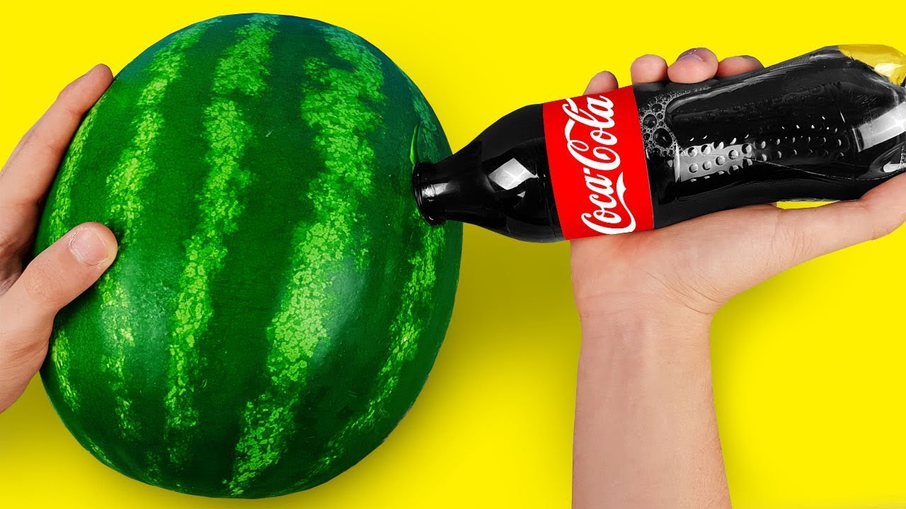
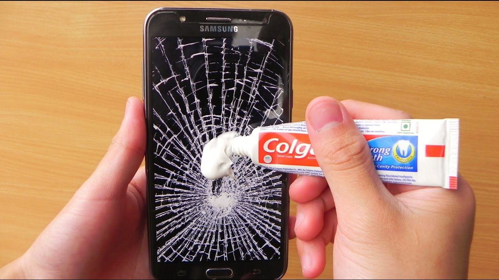
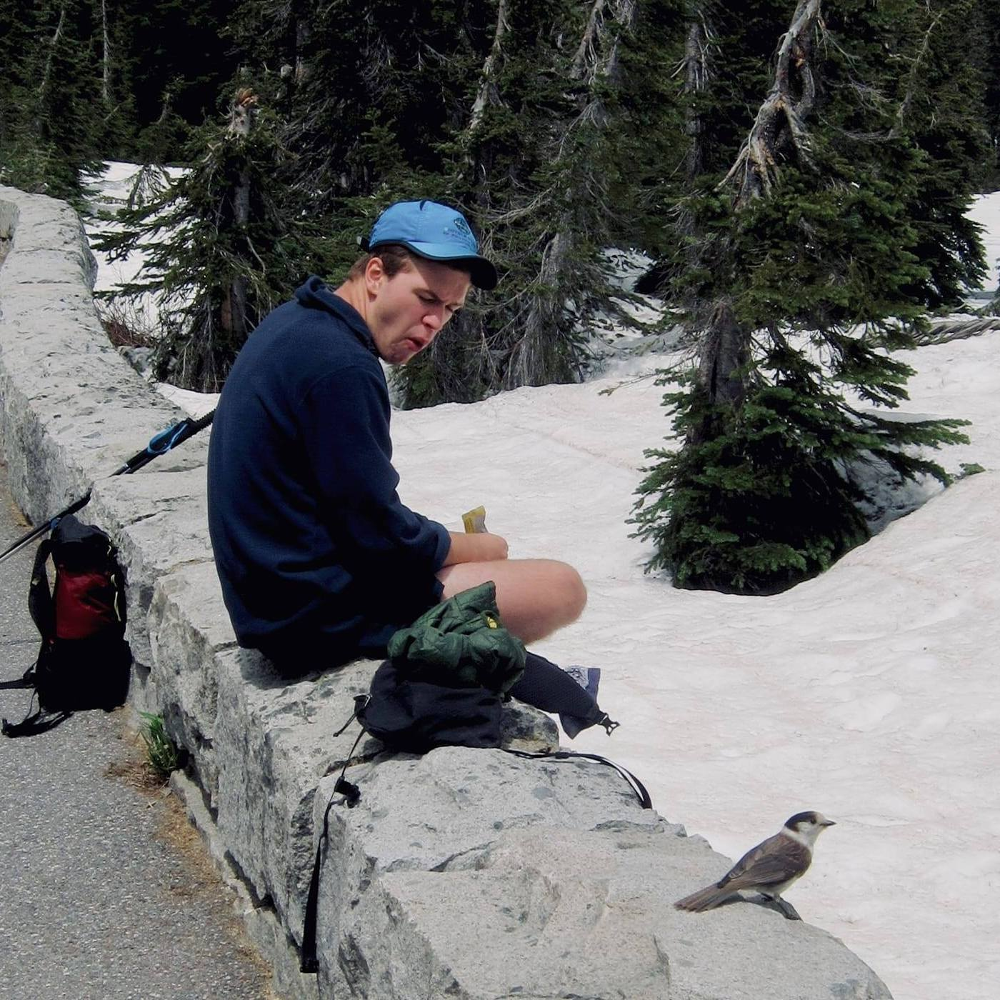

Our Mission:
To complicate your life with our hacks
Our Story
BestHacks started in the late 50's when people started cutting their jeans into jorts. From stick-n-pokes to bleached hair we've been just a few steps behind the front line of every cultural zeitgeist (we did happen to miss those two trends, as we were trying to make a record player out of a corn husk and a lazy susan). We constantly strive to bring the public the best ways to utilize household items. We hope to provide people around the world with the resources needed to repurpose any object they have - bringing the dysfunction back to an increasingly functional world.
We firmly believe that any problem can be solved by a rubberband and a handful of expensive appliances. Instead of analyzing problems and identifying practical solutions, we choose to advertise solutions that involve as many disparate materials as possible. Many criticize our hacks for being impractical, time consuming, and "more work than they're worth".

Meet the Team
Hanna Cormier
Hanna began her life as a full time life hacker early, when she convinced her parents to pack her lunches into cheese clothe tupperware, and replace her juiceboxes with papier-mache.
Sky Soehl-Gutierrez
Sky is the most experienced hacker in the team, coming from a family of hack afficianados. Her dog is the creator of the famous colander umbrella hack.

Kyla Vigdor
Kyla is known around the office for her appreciation of more conventional hacks, like her trick to use wet newspapers as office slippers.
Sean Wallace
Sean is the newest member of the BestHacks team. He realized his love for hacks recently when he used an old orange peel as a cup for a month straight.
